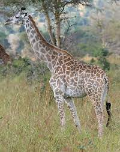

Bears
Carnivorous mammals that exist in North America, South America, Europe and Asia.
Common characteristics: stocky legs, long snouts, rounded ears, paws with five claws
More Bear Facts
Giraffes

Tallest living terrestrial animal. Food source consists of leaves, fruits, and flowers.
Common characteristics: long neck and legs, horn-like ossicones, and spotted coat pattern
More Giraffe Facts
Lions
Large carnivorous cat that is native to Africa and India.
Muscular, broad-chested body; short, rounded head; round ears; and hairy tuft at the end of its tail.
Lives in groups called "prides."
More Lion Facts
Monkeys
- Cookie
- Earl
- Banana Pudding
Mammals that are a part of the infraorder Simiiformes. Many species are tree-dwelling.
Omnivorous animals that eat nuts, fruits, seeds, insects, eggs, and more.
More Monkey Facts
Alligators
Two species of alligator: American and Chinese. Carnivorous reptile that can grow up to lengths
of 13ft on average. Live in freshwater environments, especially in the Southeast United States.
More Alligator Facts